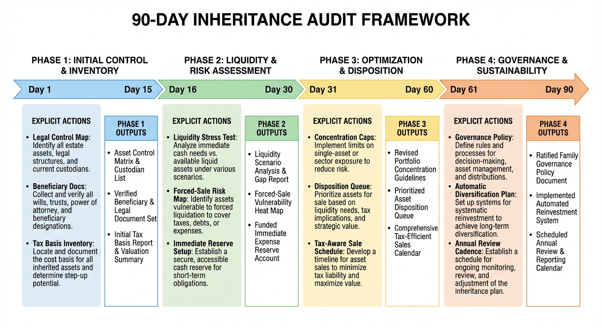

The Inheritance Illusion: When Receiving Wealth Does Not Make You Wealthy
Over the next two decades, historic capital will move across generations. Most heirs will find that nominal inheritance value differs from functional wealth.
Cerulli projects roughly $84 trillion of intergenerational transfer through 2048 in the United States. Public commentary often treats this transfer as automatic wealth growth for recipients. That framing overlooks the mechanics of household resilience. Families inherit asset labels, not guaranteed durability. What matters is liquidity, concentration, governance, tax basis clarity, maintenance burden, and timing flexibility. These structural factors determine whether inherited capital compounds or erodes under real-world pressures.

The Core Error
Inheritance is reported in gross value. Household resilience depends on net usable value. A $3 million transfer in liquid index assets behaves differently than $3 million concentrated in legacy real estate or private equity. One enables immediate optionality. The other consumes cash through taxes, maintenance, legal complexity, and forced sale timing. The critical distinction is converting assets into discretionary capital without destroying value.
Profile A: liquid transfer
This heir receives diversified liquid assets with clear legal control. The portfolio can be stress-tested, rebalanced, and integrated into an income plan quickly. Volatility exists, but cash flow is controllable. Immediate liquidity enables strategic responses to market shifts or personal needs, allowing for tax-loss harvesting or reallocation without penalty.
Profile B: illiquid real estate transfer
This heir receives multiple properties with deferred maintenance, tenant risk, and localized market concentration. Net worth appears high, but liquidity is weak. Capital calls and repair cycles can force debt or distressed selling, especially if rates remain elevated. Real estate often requires active management. Ill-timed sales in down markets can erase decades of appreciation, turning apparent wealth into a net liability.
Profile C: private business equity transfer
This heir receives a minority stake in an operating company. Value is model-based, not market-clearing. Cash distribution is uncertain. Governance rights may be limited. Tax events can occur without matching liquidity. Minority positions often lack control over dividends or exit strategies, trapping capital in illiquid form and exposing heirs to operational risks beyond their influence.
Functional principle: Wealth that cannot absorb shocks, fund obligations, or preserve choice is valuation, not resilience. True wealth is measured not by balance sheet totals, but by the capacity to deploy capital effectively under stress.
Where Inherited Wealth Fails In Practice
1) Liquidity mismatch
Ongoing obligations are paid in cash, not appraisal value. Heirs with illiquid holdings often face immediate cash demands: property taxes, insurance, probate fees, legal fees, capex, and family settlement costs. This mismatch forces suboptimal decisions, such as high-interest borrowing or fire sales, which systematically degrade long-term value.
2) Concentration and correlation risk
Inherited portfolios are frequently concentrated by geography, sector, or a single family business. A localized downturn can hit asset value and income streams simultaneously. Lack of diversification amplifies vulnerability to sector disruptions, regulatory changes, or regional economic shifts, turning inherited capital into a high-risk, undiversified bet.
3) Tax basis and realization errors
Step-up rules, carryover basis, and entity-level structures vary by jurisdiction and asset type. Misreading basis and timing can create avoidable tax leakage exactly when heirs believe they are strongest. Failure to coordinate sales with tax attributes may trigger unnecessary capital gains or transfer taxes, eroding net proceeds significantly.
4) Governance fragility
Multiple heirs with different risk tolerance and cash needs can turn a strong balance sheet into legal and operational friction. Governance design determines whether inherited capital compounds or fragments. Without clear decision-making protocols, disputes over asset management, sales, or distributions can paralyze action, leading to value-destroying stalemates or litigation.
5) Psychological and behavioral pitfalls
Heirs often exhibit emotional attachment to legacy assets or overconfidence in historical performance, leading to reluctance to rebalance or diversify. Sentimental value can cloud financial judgment, resulting in prolonged retention of underperforming or high-maintenance assets that drain rather than build wealth.
Liquidity-Adjusted Inheritance Score (LAIS)
The practical fix is to move from gross transfer value to a liquidity-adjusted score. LAIS is built from five weighted components: immediate liquidity ratio, concentration risk, legal control clarity, net-of-tax realization quality, and maintenance/capex burden. A high LAIS indicates inherited value is likely to survive stress. A low LAIS indicates a high probability of value erosion during the first adverse cycle. This metric forces a disciplined evaluation of wealth in terms of usability and durability rather than mere market valuation.
90-Day Inheritance Audit

Day 1 to 15: inventory all assets, liabilities, legal rights, and pending obligations. Catalog each asset’s liquidity profile, tax basis, and associated costs. Day 16 to 30: run liquidity stress tests and tax basis verification with jurisdiction-specific counsel. Model cash flow needs under various scenarios, including market downturns, interest rate changes, and personal financial demands. Day 31 to 60: set concentration caps and an initial de-risking map. Establish thresholds for asset sales or rebalancing to reduce correlation risk and improve liquidity. Day 61 to 90: formalize an investment policy, decision rights, and conflict resolution rules. Create a governance framework that specifies voting mechanisms, distribution policies, and procedures for resolving disagreements among heirs or trustees.
This sequence is deliberately operational. Families lose more inherited value through implementation delay and avoidable friction than through market volatility alone. The audit process transforms abstract wealth into an actionable, managed portfolio with clear protocols for preservation and growth.
What WealthMeter Readers Should Do Immediately
If you expect a transfer in the next five years, prepare the governance and tax architecture before the transfer date. Engage legal and financial advisors to structure entities, clarify ownership terms, and establish liquidity buffers. If you already received assets, run a full liquidity and concentration audit now, then enforce policy discipline around spending, reinvestment, and forced-sale avoidance thresholds. Implement a regular review cycle to monitor LAIS components and adjust strategies as personal circumstances or markets change. The first durable win is rarely return maximization. It is preventing fragility from masquerading as wealth.
Source List
Cerulli Associates. (2024). U.S. wealth transfer projection through 2048.
Federal Reserve. (2023). Survey of Consumer Finances.
Federal Reserve Bank of St. Louis. (2026). Household balance-sheet and housing-series context.
IRS. (2025). Estate and gift tax guidance; basis treatment resources.